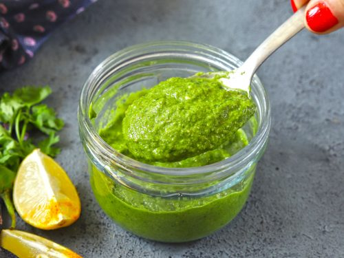

Mint chutney or pudina chutney is a traditional Indian chutney made with mint as the main ingredient. Other ingredients include cilantro, lemon juice, ginger, garlic, onions, and chili peppers, along with water and spices (optionally). There's a large number of mint chutney variations, with different additional ingredients.
Meal prep time : 15 minutes
Servings : 4